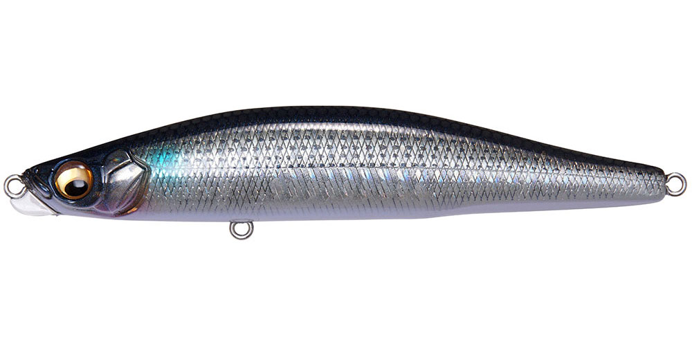
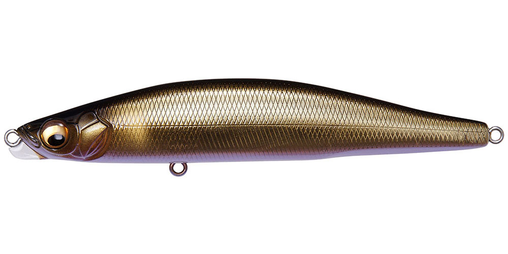
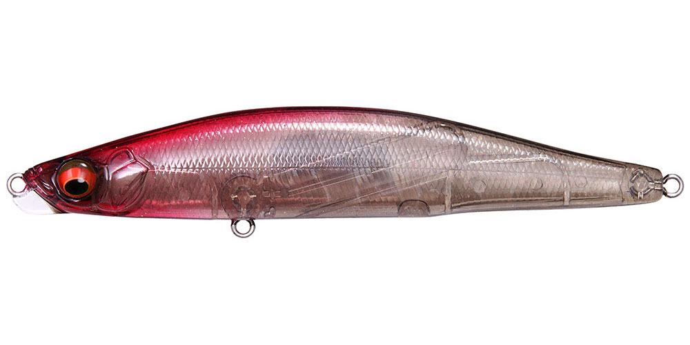
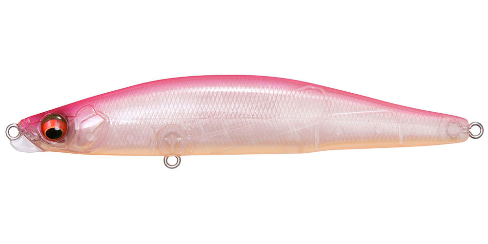

ゲンマ110S
（GENMA 110S）
ゲンマ110SはMegabass（メガバス）のシンキングペンシルです。
ランカーハンター久保田剛之プロデュースのゲンマシリーズで、スキルや対象魚を問わずさまざまな状況で使える「バーサタイル・シンキングペンシル」として開発されたモデル。頭部前面のスイミングプレートで泳ぎ出しが早く、安定して泳ぎ、適度な抵抗感で操作しやすくなっています。

画像出典:Megabass公式HP
スペック
- メーカー
- Megabass（メガバス）
- タイプ
- シンキングペンシル
- 全長
- 110mm
- 自重
- 21g／29g
- フック
- #4×2
- テクノロジー
- SWIMMING KEEL（PAT.P）・重心移動
- ターゲット
- シーバス・ヒラスズキ・ヒラメ
- 価格
- 2,100円（税別）
▼今すぐチェック

ゲンマ110Sの特徴
スキルも対象魚も選ばない、バーサタイルなシンペン
-
頭部前面のスイミングプレート
SWIMMING KEEL（PAT.P）で、アクションの素早い始動性・スイム時の安定性・加減がつかみやすい適度な抵抗感を実現。シンペンが苦手な人でも扱いやすくなっています。
-
飛距離と立ち上がりを両立
独自の重心移動システムで、遠投性能とアクションの立ち上がりを両立しています。
-
対象魚に合わせた2つのウェイト
21gは流れや潮に乗せた揺らぎアクションでヒラスズキやマルスズキを狙うモデル。29gは飛距離や着底感度、レンジコントロールに優れ、ヒラメなどフラットフィッシュにも向いています。
ゲンマ110Sの使い方
基本はスローのただ巻き。21gは流れに乗せてドリフトさせ、揺らぎアクションで食わせます。
29gは遠投してボトムまで沈め、ボトム付近をゆっくり引いたりリフト＆フォールさせたりと、サーフのヒラメや深めのレンジのシーバスを狙う使い方に向いています。
ゲンマ110Sの得意な状況
河川・河口・干潟・サーフ・磯まで、場所を選ばず使えます。流れのある場所でのシーバスやヒラスズキ、サーフのヒラメなど、1本で幅広く探りたいときに頼れるモデルです。
ワンポイント
シーバスやヒラスズキを流れで食わせるなら21g、サーフのヒラメや遠投が必要な場所なら29gと、ウェイトで使い分けましょう。
ゲンマシリーズの使い分け
| モデル | 全長／自重 | 得意な場面 |
|---|---|---|
| ゲンマ85S | 85mm／13g・17g | 小型ベイトや港湾・河川・運河の小場所に |
| ゲンマ110S | 110mm／21g・29g | 状況を問わず使えるバーサタイルモデル（本記事のモデル） |
| ゲンマスリム120S | 120mm／19.5g | 細身のベイトやバチに。ジグミノー並みの飛距離 |
どのモデルも頭部前面のスイミングプレート「SWIMMING KEEL（PAT.P）」を搭載しています。ベイトの大きさと形、届かせたい距離で選びましょう。
人気カラー
公式ラインナップから4色を紹介します（カラー名は公式の表記のまま）。

GG BORAボラを意識したナチュラルカラー。ボラパターンの河川・河口に。

WAGIN OCHI AYU和銀仕上げの落ちアユカラー。秋の河川の落ちアユパターンに。

GP MAZUME SHADOWマズメの時間帯を意識したカラー。朝夕の薄暗い時間にシルエットを見せたいときに。

SKELETON PINKクリア系のピンク。澄み潮や常夜灯まわりで、控えめにアピールしたいときに。
画像出典:Megabass公式HP
ゲンマ110Sに似ているルアー
-
 ゲンマスリム120S
メガバス
詳細はこちら＞
ゲンマスリム120S
メガバス
詳細はこちら＞
全長120mm・自重19.5gの同シリーズ。細身のベイトやバチに合わせたいときに。
-
 モアザン スイッチヒッター105S
DAIWA
詳細はこちら＞
モアザン スイッチヒッター105S
DAIWA
詳細はこちら＞
全長105mm・自重21.2gのシンキングペンシル。同じくらいの重さで、S字スラロームで見せたいときに。
-
 ザブラ モンスーンブレイカー115
ZIPBAITS
詳細はこちら＞
ザブラ モンスーンブレイカー115
ZIPBAITS
詳細はこちら＞
全長115mm・自重29gのジグミノー。29gと同じ重さで、サーフや青物狙いに。